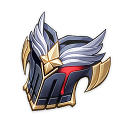
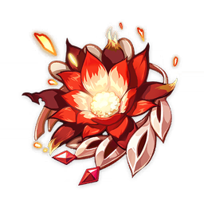

Description :
The Noblesse Oblige is a much sought after Artifact Set in Genshin Impact.
It is commonly used on DPS or Support DPS characters to increase party damage output,
especially for characters who are reliant on Elemental Burst damage to be effective.
Stat :
2-Piece: Elemental Burst DMG +20%.
4-Piece: Using an Elemental Burst increases all party members ATK by 20% for 12s. This effect cannot stack.

Description :
Bloodstained Chivalry is an Artifact Set in Genshin Impact.
Artifacts are accessories that are equipped by the Playable Characters of the game,
these items provide an increase to certain stats and grants special artifact set bonuses upon wearing a 2-piece or 4-piece set bonus.
Stat :
2-piece Set Bonus: Physical DMG +25%
4-piece Set Bonus: After defeating an opponent, increases Charged Attack DMG by 50%,
and reduces its Stamina cost to 0 for 10s. Also triggers with wild animals such as boars, squirrels and frogs.

Description :
The 2 and 4-Piece Set Bonus are extremely powerful as they boost any Pyro character's overall Pyro damage and make Pyro Elemental Reactions even more explosive.
As team synergies are often built around elemental reactions,
this Artifact Set is a core piece of any Pyro or Overloaded focused team.
Stat :
2-Piece: Pyro DMG Bonus +15%.
4-Piece: Increases Overloaded and Burning DMG by 40%. Increases Vaporize and Melt DMG by 15%.
Using an Elemental Skill increases 2-Piece Set effects by 50% for 10s. Max 3 stacks.